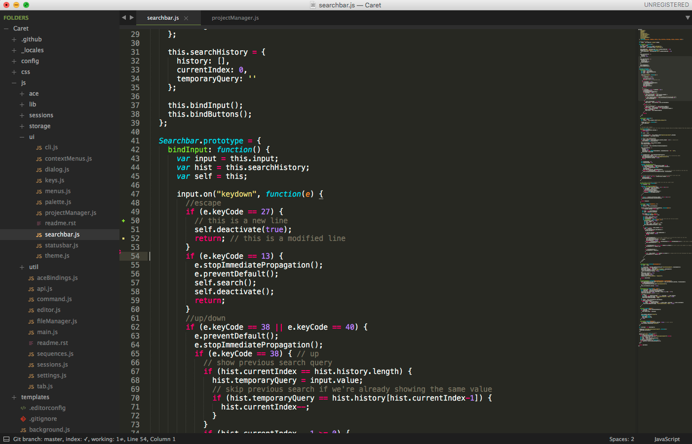
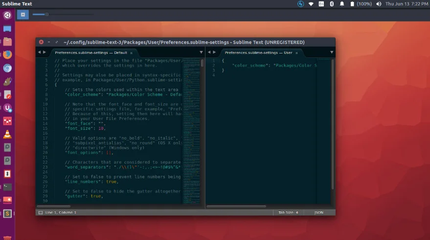
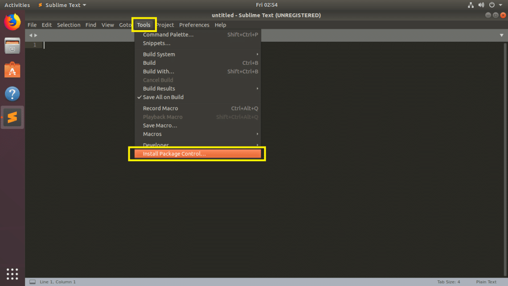

LE MATCH DES PLUS ET MOINS
Les pour
Stable Plugins nombreux --> Multiplateforme --> Fonctionne par projets --> Rapide
Les contre
Maintenu par un unique développeur --> Licence nécessaire donc payant --> Apprentissage de beaucoup de raccourcis --> Interface perfectible --> Pas de version française
En tout cas il est vraiment rapide !





| Créateur Jon Skinner Développé par Sublime HQ |
| Première version 18 janvier 2008 |
| Dernière version 1er octobre 2019 |
| Écrit en C++, Python |